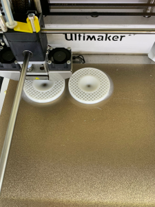
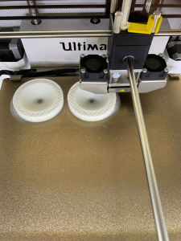
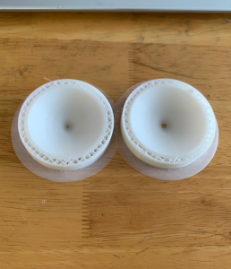
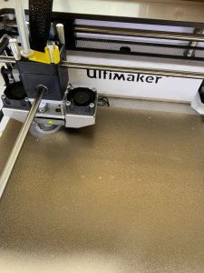
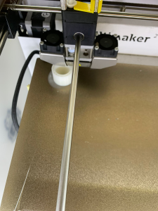
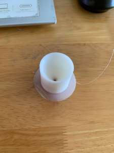

Final Project
Stage 4
Testing
Next, I started experimenting how to get about the challenges through various testing. Overall, most of it works well as initially plan but some needed to go with the alternative solution.
Testing List
Testing List- Results
Testing List - Process
Testing List - Process - Video
Testing if the servo motor and relevant code are working.
Testing if the ultrasonic sensor and relevant code are working.
Testing if the ultrasonic sensor detects a specific distance with led.
Testing if the led can be displayed as holograms.
Testing List - Process - Code
Testing if the servo motor and relevant code are working.
Testing if the ultrasonic sensor and relevant code are working.
Testing if the ultrasonic sensor detects a specific distance with led.
Testing List - Process - Sand Flow
Testing if the sand will be stuck and the size of the hole needs for the sand to flow for a minute.






The following is a hole with a diameter of 1 mm and about 30 degree slope. Result suggests that 1 mm diameter is too small.
The following shows that a 30 degree slope is not steep enough.
The following is a hole with a diameter of 3 mm and about 30 degree slope. Result suggests that 3 mm diameter is good enough.
The following is a hole with a diameter of 3 mm and about 45 degree slope. Result suggests that 3 mm diameter and 45 degree slope is good enough.
The following shows how I get the flow speed of the sand through a 3 mm diameter hole with 45 degree slope.
Step 1 - Measure the weight of the container and record.
Step 2 - Measure the weight of the container with sand and record.
Step 3 - Measure the time taken for the sand to flow and record.
Step 4 - Repeat step 2 with a different weight from step 1.
Step 6 - Repeat step 2 with a different weight from step 1 and 2.
Step 8 - Calculate the speed of sand flow.
Based on step 8, I want to find the space needed for the sand. (The space needed is reocrded in step 8 above.)
Step 1 - Weigh the containers with sand to desired weight.
Step 2 - Measure and record the breadth of the container.